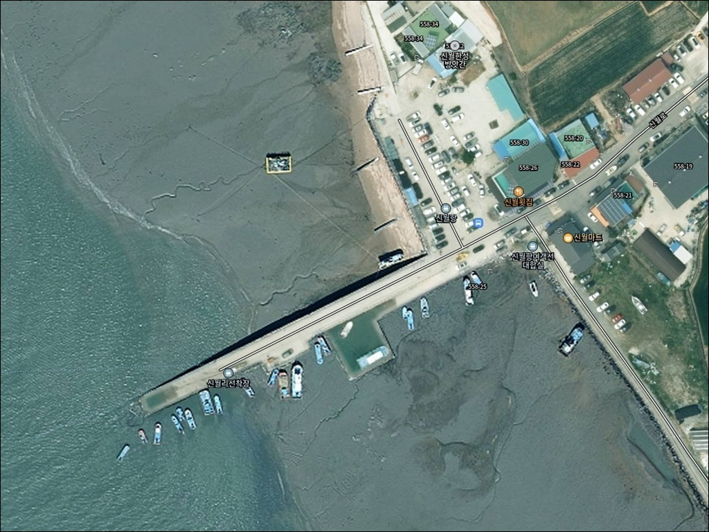
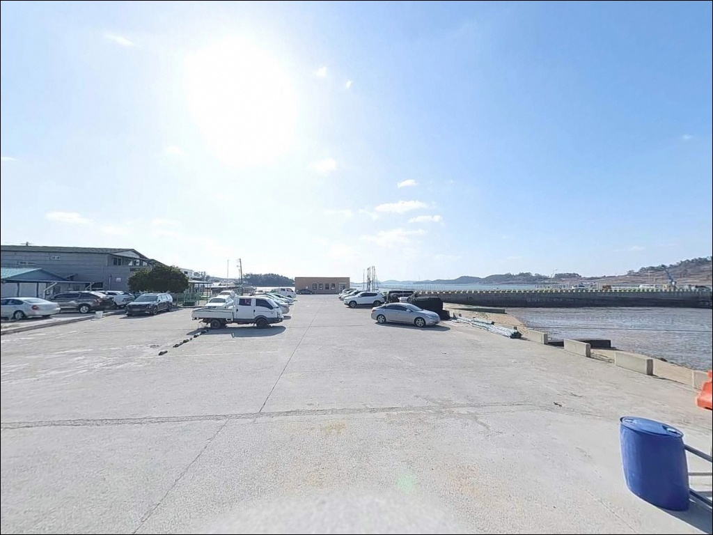
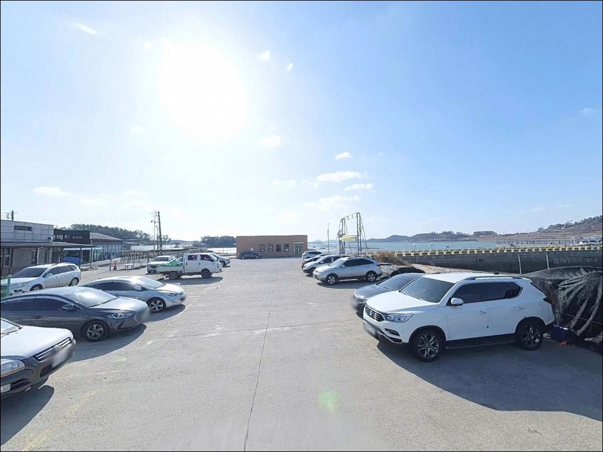
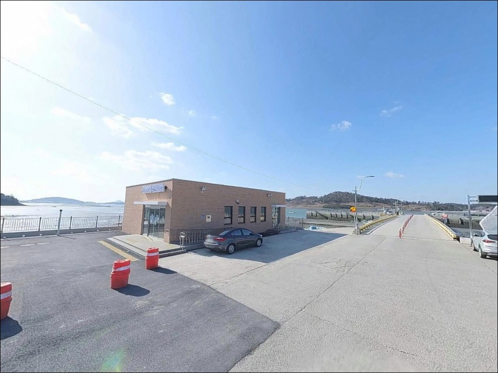
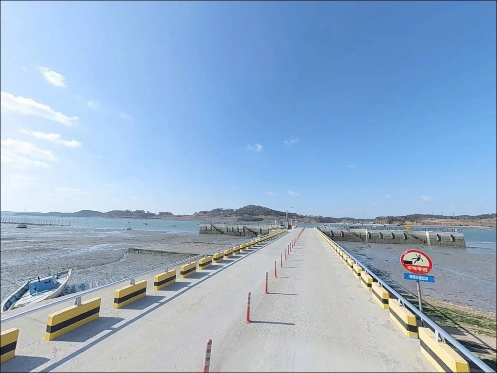
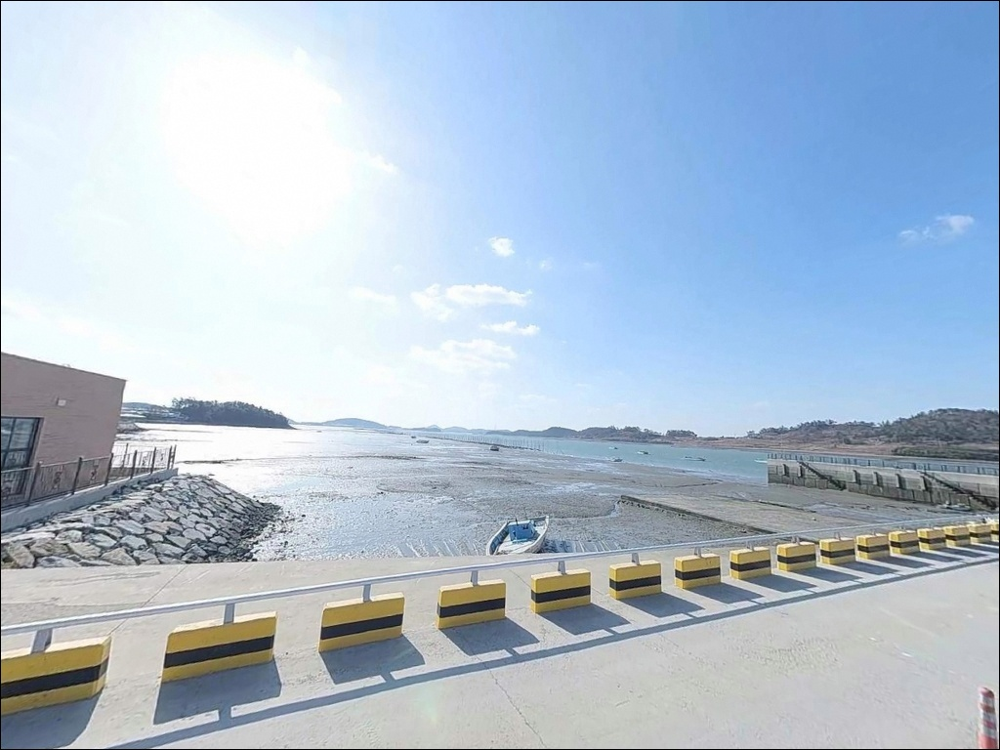
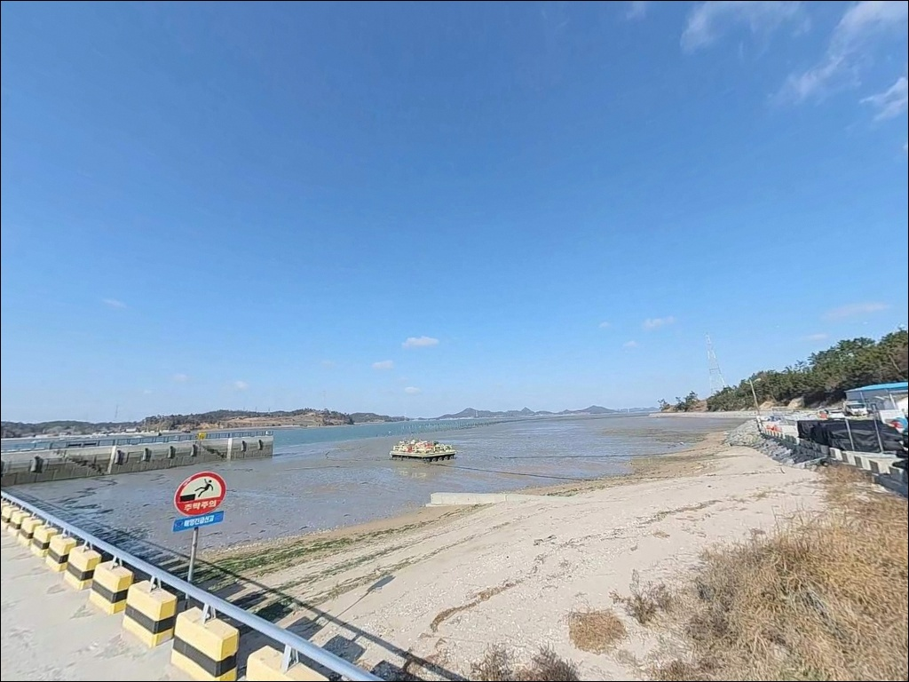
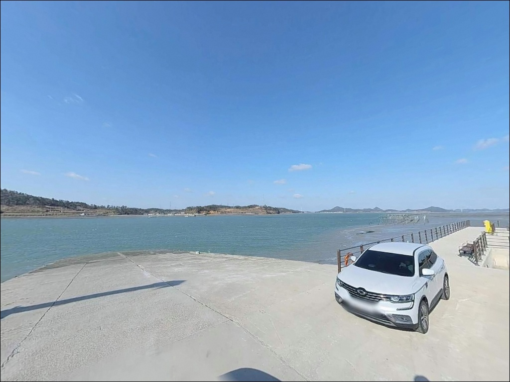
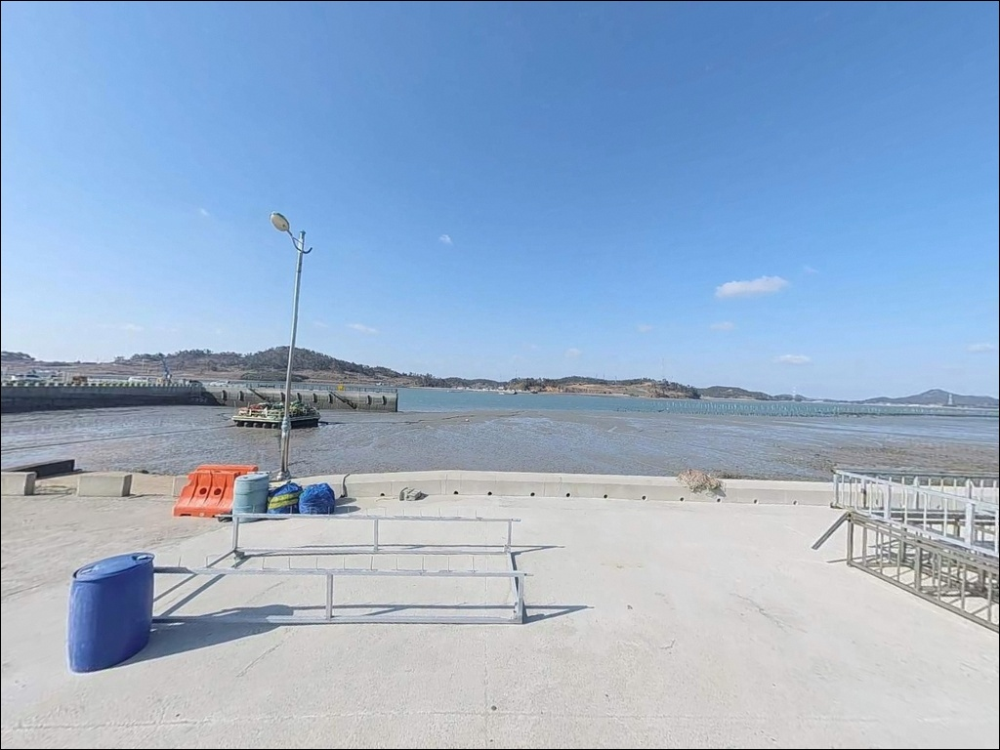

신월항, 신월리선착장, 전남 무안군 자연 그대로의 분위기에서 차박, 낚시를 즐기기 좋은 포인트
이 페이지에는 광고(제휴 링크 포함)가 있으며, 광고 링크를 통해 구매하면 운영자가 판매 수익 또는 수수료를 받을 수 있습니다. 포인트 사진: 카카오맵 스카이뷰·로드뷰. 이 페이지의 지도·사진 이미지는 카카오맵의 실제 서비스 이미지와 다를 수 있습니다.


포인트 안내
신월항
전남 무안군 운남면 내리 999-7
물때를 확인하지 않고 신월항을 찾으면
간조 시간대 드러난 갯벌만 보고 돌아오는 상황이 됩니다.
무안 서해안 특유의 조석 간만의 차는
만조와 간조 사이에 낚시 가능 여건을 완전히 뒤바꾸는 구조입니다.
이 글은 신월항의 진입 환경, 지형 특성,
물때 기반 낚시 여건, 차박 가능성에 집중합니다.
조황 단정이나 특정 어종 보장은
이 글의 범위에 포함되지 않습니다.
전남 무안군 운남면 내리에 위치한 신월항은
2005년 어촌정주어항으로 지정된
소형 선착장 구조의 항구입니다.
선도·고이도 등 인근 도서로 향하는
여객선이 운항되는 출발지로,
여객선 터미널 기능과 낚시 포인트 성격을
함께 갖춘 곳이기도 합니다.
바다타임에는 신월항 코드 563으로
물때와 날씨 정보가 제공됩니다.

1. 진입 동선과 포인트 접근성
신월항은 어촌정주어항이자 여객선 터미널로,
운남면 내리 방향 지방도에서
차량으로 진입할 수 있는 구조입니다.
공식 항구 기능을 갖춘 곳이라
진입로의 기본 포장은 갖춰져 있으나,
어촌 마을 내부를 통과하는 구간은
도로 폭이 좁아지는 구간이 포함되는 경우가
있습니다.
출발 전 위성지도로 진입 경로를
먼저 살펴두는 것이 좋습니다.
대형 SUV나 캠핑 장비를 실은 차량이라면
선착장 인근 회차 공간 여부를
사전에 파악하는 것이 우선입니다.
소형 어항 구조상 회차 공간이
여유롭지 않을 수 있어,
후진 진출이 어려운 차량은
진입 전 갓길 폭도 함께 확인하는 편이 안전합니다.
주차는 방파제 진입부 공터나
선착장 주변 여유 공간을 활용하는 방식이 일반적입니다.
어민 작업 동선과 여객선 승하선 구역을
방해하지 않는 자리를 먼저 골라야 하며,
공간이 협소하다면 진입로 측면 확장 구간을
대안으로 살펴볼 수 있습니다.
진입 동선이 여의치 않으면 차량을 세우고
도보로 포인트를 탐색하는 방식도 현실적입니다.

2. 차박 환경과 야간 체류 여건
신월항은 내리 마을과 인접한 구조라
야간에도 민가와 가까운 환경입니다.
완전한 고립형 차박 분위기보다는
어촌 마을 안에 자리를 잡는 형태에 가까우며,
프라이버시는 제한적인 편으로 봐야 합니다.
여객선 출발 시간대에는 도선 이용객과
차량 왕래도 예상됩니다.
항구 주변에는 항만 조명이 일부 갖춰져 있어
완전 암흑 환경은 아니지만,
방파제 선단 쪽은 조명이 충분하지 않을 수 있어
개인 헤드랜턴과 랜턴은 반드시 준비해야 합니다.
무안 서해안 특성상 바람이 강해지는 날에는
체류 여건이 달라질 수 있으므로
출발 전날 기상 예보를 다시 한번 확인하는 것이
기본 준비입니다.
낚시를 마치고 잠시 머무는 단기 체류 용도라면
나쁘지 않은 환경이지만,
차박을 메인 목적으로 삼기에는
주차 공간 협소 여부와 프라이버시 수준을
현장에서 직접 확인하는 과정이 먼저입니다.
파도 영향이 적은 내만 구조라
해상 소음은 크지 않은 편입니다.


3. 주변 편의시설 및 인프라 현황
신월항 인근 선착장 바로 주변에서
편의시설을 기대하기는 어렵습니다.
반경 약 2~3km 거리에
운남면 소재지가 위치해 있으며,
이 방향에 농협 하나로마트와
식당·편의점이 갖춰져 있어
출조 전 물자 보충이 가능한 동선입니다.
낚시 소품이나 식료품은
이 구간에서 미리 준비하고 진입하는 편이 효율적입니다.
응급 상황 발생 시에는 운남면 방향으로
이동해 의원·약국을 이용할 수 있으나
운영 시간에 제약이 따를 수 있습니다.
연료·비상약품·식수는 출발 전에
완비해두는 것이 기본입니다.
더 넓은 상권이 필요하다면
무안읍 방향으로 이동하는 것이
현실적인 대안입니다.

4. 물때를 알아야 낚시가 시작됩니다
신월항 방문에서 가장 먼저 준비할 것은
물때표입니다.
무안 서해안은 조석 간만의 차가 매우 큰 지역으로,
간조 때에는 갯벌이 광범위하게 드러나
채비를 던질 수 있는 수심 자체가
확보되지 않는 상황이 됩니다.
바다타임에서 신월항(코드 563) 기준 물때를 확인하고,
만조 전후 2~3시간을 핵심 타이밍으로 잡는 것이
이 포인트의 기본 출조 전략입니다.
신월항은 만조 전후 2~3시간이 낚시 여건이 살아나는 핵심 타이밍입니다.
사리 전후에는 조류가 빠르게 흐를 가능성이 있어
채비가 쉽게 밀리는 구조가 됩니다.
조금 전후 타이밍을 선택하면
조류 속도가 완만해져
채비 컨트롤과 입질 파악이 훨씬 수월해집니다.
물때 확인 없이 방문하면
어떤 채비를 써도
낚시 여건 자체가 만들어지지 않을 수 있습니다.
방파제와 선착장에서 낚시할 때는
구명조끼 착용이 기본입니다.
선착장 바닥은 이끼와 물기로
미끄러운 구간이 있을 수 있으니
미끄럼을 방지하는 안전화를 신는 것이 좋습니다.
야간 낚시라면 헤드랜턴을
여분 배터리와 함께 반드시 챙겨야 합니다.

5. 갯벌 지형이 만드는 신월항 낚시 구조
무안 갯벌권 포인트에서는 물때표 확인이 출조 성패의 90%를 결정합니다.
신월항이 속한 운남면 해안은
63km에 달하는 해안선을 가진 지역으로,
해안 대부분이 갯벌과 조간대 환경으로
이루어져 있습니다.
이 특성상 선착장 끝단이나
방파제 외항 쪽이 가장 유효한 포인트 구간이 됩니다.
물이 들어오면서 조류가 갯골 방향으로 흐르는 구간을
먼저 파악하는 것이 자리 선택의 기준입니다.
수심은 만조 기준 선착장 끝단에서
3~5m 수준이 확보될 수 있습니다.
내항 쪽은 상대적으로 얕아
간조가 가까워질수록 바닥이 드러나는 경향이 있습니다.
따라서 낚시 자리는
외항 방향 또는 선착장 끝단 쪽을 우선으로 살피는 것이
이 지형 구조에서 맞는 접근입니다.
항 입구 수로 쪽은 조류 흐름이 형성될 때
어군 회유 가능성이 있는 구간으로
탐색해볼 만합니다.
테트라포드가 있는 구간에는
야간 진입을 삼가는 것이 안전합니다.
낚시 후 쓰레기는 반드시 수거해
어촌 마을 주민에게 피해가 가지 않도록 하는 것이
기본 매너입니다.
소형 어항 특성상 주민 민원에 따라
낚시 여건이 달라질 수 있는 포인트이기도 합니다.
출조 전 최신 조황은 신월항 낚시,
무안 운남면 방파제 낚시로
검색해 보시기 바랍니다.


6. 원투낚시가 기본, 루어로 탐색하는 선착장 포인트
신월항의 지형 조건에 가장 잘 맞는 낚시 방식은
원투낚시입니다.
원투낚시란 무게 있는 봉돌을 달아
먼 거리로 채비를 던진 뒤
바닥 어종을 노리는 낚시 방식입니다.
갯벌 지형에서 만조 전후 조류가 흐를 때
무거운 봉돌로 채비를 멀리 보낸 뒤
갯골 방향을 탐색하는 방식이
이 지역 방파제에서 일반적인 전략입니다.
봉돌은 조류 세기에 맞춰 무게를 올리는 것이
채비 컨트롤의 기본입니다.
무안권 동일 해안선에서
기대해 볼 수 있는 어종으로는
감성돔(봄~가을 만조 시), 붕장어, 숭어 등이 있습니다.
감성돔은 4월 중순부터 5월 중순 사이
산란을 위해 북상하는 개체가
무안 방파제권에 잠시 머무는 시기가 있습니다.
수심이 얕은 만조 환경에서
방파제 끝단과 물골 경계를 집중 탐색하는 것이
이 지형에서 유효한 방식입니다.
루어낚시도 중들물 이후
선착장 주변이나 방파제 외항 라인에서
시도해볼 수 있는 방식입니다.
수심과 조류가 받쳐주는 조건에서
소형 미노우나 그럽웜 계열 루어로
수로 주변을 탐색하는 방식이 어울립니다.
찌낚시는 방파제 중간 구간이나
내항 쪽에서 수심이 확보되는 구간을 골라
짧게 흘리는 형태로 운용할 수 있습니다.

7. 신월항이 여의치 않을 때의 대안 동선
신월항의 조건이 맞지 않거나
물때가 어긋났을 때
무안군 해안에서 먼저 이동할 수 있는
대안 포인트가 있습니다.
무안군 청계면 방향의
톱머리 방파제는
자갈밭과 갯벌이 어우러진 지형으로
감성돔 포인트로 알려진 곳입니다.
포인트 규모도 신월항보다 크고
낚시 자리를 선택하는 폭이 넓습니다.
같은 무안군 청계면의
구로리 선착장 방파제도
무안권 바다낚시 포인트 중
후기가 확인된 곳입니다.
원투낚시 여건이 안정적인 편이라
신월항에서 이동할 첫 번째 선택지로 삼을 수 있습니다.
신월항 북서쪽의 조금나루는
긴 해안선과 방파제가 있어
물때에 맞춰 다양한 자리를 고를 수 있는
대안 포인트입니다.
차박 목적으로 더 쾌적한 환경이 필요하다면
톱머리해수욕장 방향을 살펴볼 수 있습니다.
신월항 대비 주차 여건이 넓고
기초 편의시설 접근성이 좋아
낚시와 차박을 함께 염두에 둔
이동 후보가 됩니다.
신월항 선착장에서 여객선으로
인근 섬으로 들어가는 선도·고이도 방향도
별도 낚시 포인트로
일정 변경 시 플랜 B로 검토할 수 있습니다.

물때를 맞추면
신월항이 달라 보입니다
원투낚시를 즐기는 낚시인이라면
신월항의 지형 조건은 잘 맞는 구조입니다.
만조 전후 조류가 갯골 방향으로 흐를 때
채비를 멀리 보내는 방식이
이 포인트에서 기대해 볼 수 있는
기본 공략입니다.
온라인 조황 정보가 많지 않은 편이라
직접 발품을 팔아야 하는 탐색형 포인트이기도 합니다.
반면 물때 계산 없이 간조 시간대에 도착하거나,
진입로를 확인하지 않은 채
대형 차량으로 찾아가면
낚시도 차박도 여의치 않은 상황이
될 수 있습니다.
물때 확인, 진입로 사전 점검, 자급 준비,
이 세 가지를 갖추고 간다면
조용한 서해안 어항에서
소박한 출조를 즐길 수 있는 곳입니다.
무안 갯벌 해안의 작은 어항에서
만조 조류와 함께 채비를 던지고
하룻밤 머무는 여정이라면,
신월항은 낚시와 차박을 함께
담담하게 즐기기에 어울리는 포인트입니다.